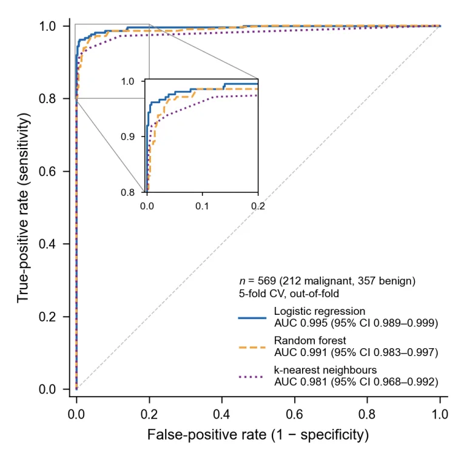

Academic
Reference checks and figures for research papers
Reference Audit checks that the references in a list exist. We also draw figures for research papers from your own data.



Three sample figures, drawn from public datasets.
Background
Two jobs take a researcher's time before submission. One is checking that every reference exists and is cited correctly. The other is drawing figures to the size and type rules of a journal.
Why it matters
A reference that cannot be found, or a paper that has been retracted (withdrawn by its publisher), in a submitted list is the author's responsibility.
A figure with the wrong size or unreadable type is sent back by the journal.
Why choose us
- Reference Audit runs in the browser and is free for lists of up to 15 references. Its source code is public under the MIT licence.
- It looks each reference up in five open indexes (Crossref, OpenAlex, Semantic Scholar, DataCite and Open Library) and labels it Found, Check, Retracted or No record.
- For figures, the preview is free and you pay only for the files.
- The Python script and a note of every statistic come with the figure, so you can reproduce it.
- The statistics in the three samples were computed a second time, separately, and matched.
- Data are never invented, changed or left out.
- The studio is run by a PhD candidate.
Services and prices
Reference Audit Start here
Free
Lists of up to 15 references are checked free of charge, and no account is needed.
- You supply
- A reference list in any citation style, the contents of a BibTeX file, or a draft as a .docx, .pdf or .txt file.
- You get
- Each reference labelled Found, Check, Retracted or No record.
Reference Audit 30-day pass
£5
For longer lists there is a pass. It costs £5 with tax included, lasts 30 days, checks up to 400 references at a time and adds the CSV download. It is a single payment and does not renew. Ask within 14 days of payment and it is returned in full.
- You supply
- As for the free check.
- You get
- Lists of up to 400 references at a time, and a CSV download.
Figure with up to 2 panels
£30
A panel is one plot inside the figure, such as the parts labelled a and b in the first sample below.
- You supply
- The data as a CSV or Excel file, the question the figure must answer, and the journal or the width.
- You get
- A vector PDF, an SVG and a 300 dpi PNG, the Python script that draws the figure, a statistics note and a draft caption.
- Delivery
- A small preview image within two working days, free of charge.
Figure with up to 6 panels
£60
For a figure that sets several plots side by side to make one argument.
- You supply
- As for the figure with up to 2 panels.
- You get
- As for the figure with up to 2 panels.
- Delivery
- As for the figure with up to 2 panels.
Sample output
Terms for figures
The preview is free. You pay only if you want the files, by Stripe payment link. One round of changes is included.
If the files differ from the preview you accepted and the changes do not fix it, the payment is returned in full.
Do not send data that identifies a person. How your data is handled, what is not done, and the samples are on the figures page.
Need something that is not listed here? Write and say what you need. We will look at what it takes and come back with a fixed quote or with the nearest thing we can do.
Get a free preview of your figure
Send your data file and the question the figure must answer. A small preview image comes back within two working days, free of charge. The subject line is filled in for you.
fanze.meng@fanzstudio.org
If the button does nothing, your computer has no mail program set. Copy the address or use a web mail link.